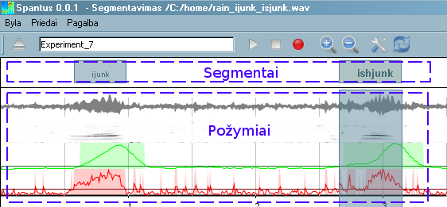

Spantus segmentavimo vartotojo vadovas
Pagrindinis langas

- Lango antraštėje yra aprašyta pagrindinė einamoji informacija
- Menu juosta leidžia valdyti programą ir jos funkcionalumą
- Įrankių juostoje yra mygtukai, kurie leidžia iškviesti dažniausiai naudojamas komandas
- Grafinis langas susideda iš dviejų dalių: segmentų valdymo skydelio ir požymių grafikų atvaizdavimo skydelio.
Įrankių juosta
- - Atverti nauja garso bylą
- Teksto laukelis įvesti eksperimento pavadinimą. Bus naudojamas kaip priesaga užsaugant eksperimento rezultatus.
- - Groti pažymėtą signalo vietą.
- - Stabdyti grojimą ar įrašymą.
- - Pradėti įrašymą iš mikrofono.
- - Artinti pažymėtą signalo vietą.
- - Gražinti vaizdą į normalią peržiūros būklę.
- - Keisti programos nustatymus.
- - Perskaičiuoti požymius.
Grafinis langas
Su dešiniu pelės klavišu galite iškviesti iššokantį meniu segmentų valdymui: Groti pasirinktą segmentą, sukurti naują, ištrinti pažymėtą, pataisyti antraštę. Greitieji klavišai:
- Pasirinkti einamą segmentą galima su kairiuoju pelės klavišu.
- delete klavišas - einamas segmentas bus ištrintas
- Tarpo(space bar) klavišą - segmento atkarpa bus atgaminta.
- Du kartus nuspaudus su kairiu klavišu ant segmento, bus atidarytas taisymo langas
- Du kartus nuspaudus su kairiu klavišu ant tuščios segmentų skydelio vietos, bus sukurtas naujas segmentas
Požymių skydelis:
- Su kairiu pelės klavišu tempiant galima pažymėti signalo vietą, kurią vėliau galima priartinti ar atgaminti nuspaudus atitinkamus klavišus iš įrankių juostos
- Užvedus ant požymio pelės kursorių ir palaikius kelias sekundes bus parodytas požymio pavadinimas ir kursoriaus pozicija
Naudojimas
Įrašyto garso segmentavimas
Pradžioje turi būti pasirinktas projektas
Segmentavimas. Dabartinio projekto pavadinimas yra matomas antraštėje. Patikrinti ar nustatymai atitinka Jūsų reikalavimus, juos pažiūrėti ir pakeisti galima pasirinkus meniu juostoje
Priedai->Nustatymai... . Rekomenduojama: slenksčio tipas
Signalo, slenksčio koeficientas apie 2, segmentavimo požymiai
Glodinta energija ir
Signalo entropija, .
Segmentuojant signalą iš mikrofono:
- Paspauskite įrašymo mygtuką. Po 0,25s turėtumėte pamatyti įrašyto garso grafiką su vienu bangos formos požymiu.
- Ištarkite norimus žodžius ir paspauskite stabdymo mygtuką. Signalas bus įrašytas pavadinimu, kuris yra parašytas įrankių juostoje
- Automatiškai signalas bus segmentuojamas ir segmentai bus atvaizduoti aukščiau požymių grafikų.
- Pataisykite segmentaivimo netikslumus jei reikia.
- Pasirinkite meniu Priedai->Išsaugoti segmentus, norint segmentaivimo rezultatus išsaugoti.